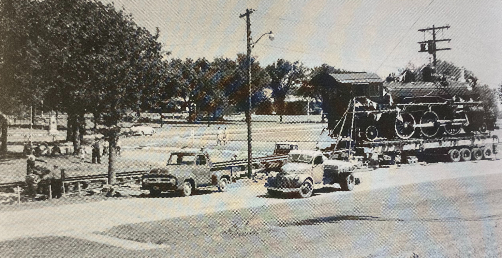
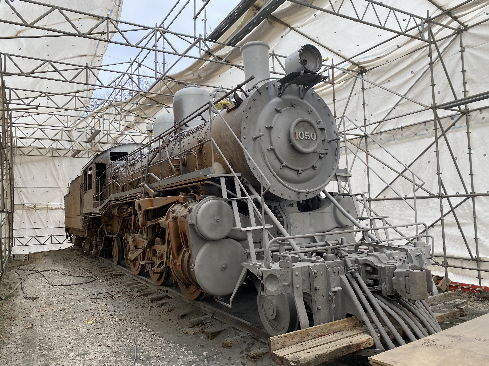
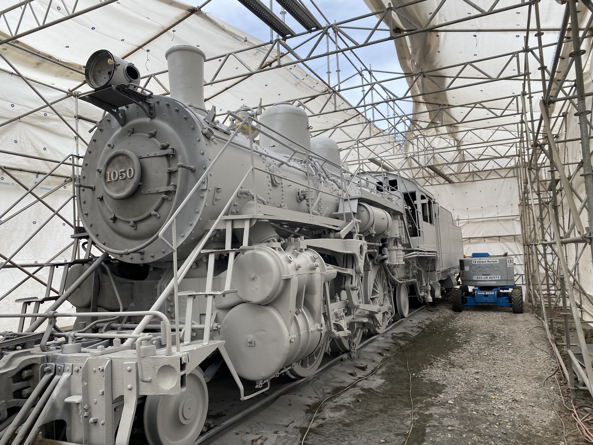
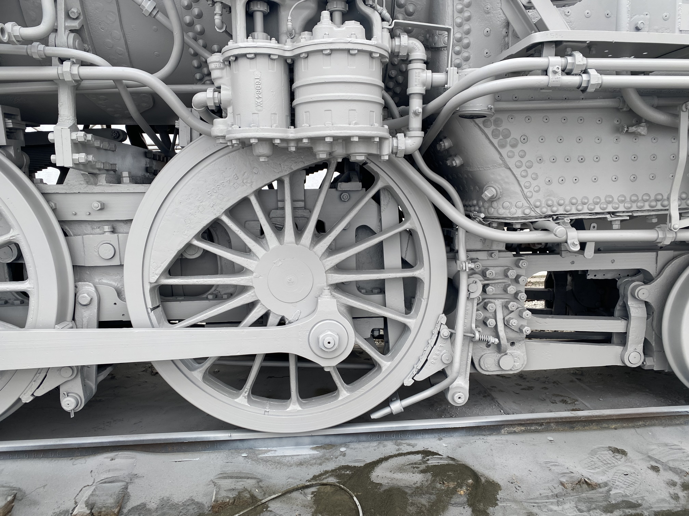
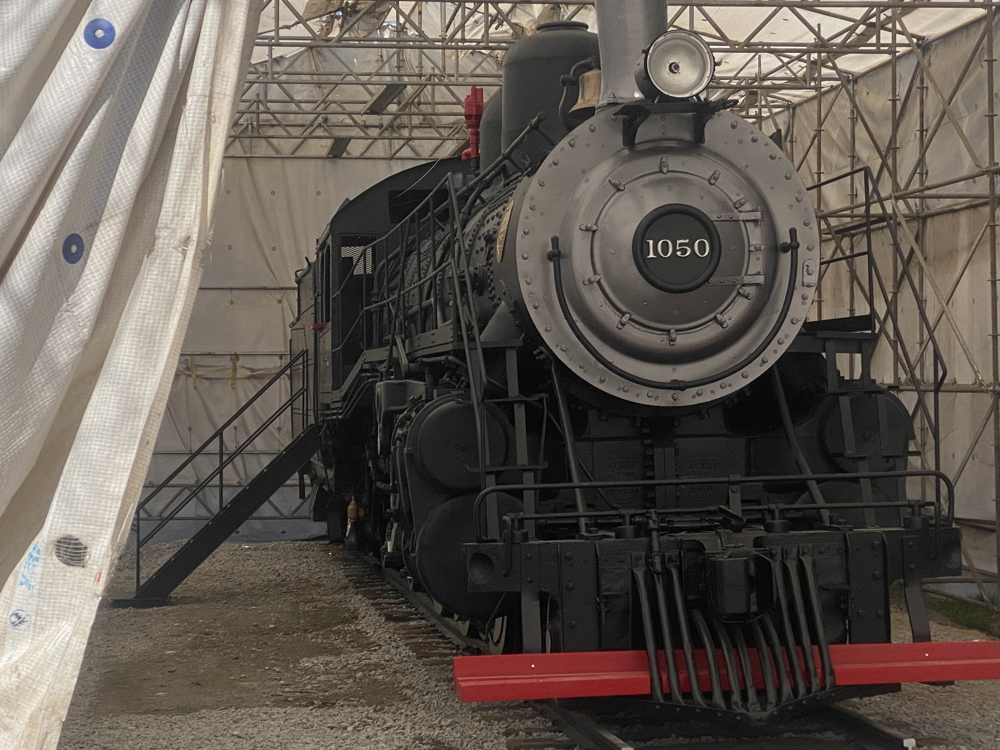

Historic Install
Swipe to explore photos of the past



Restoration




This Steam Locomotive built by Baldwin for the AT&SF is 2-6-2 Prairie Type. Built in 1903 it was brought to Riverside Park in 1955. In 2024, a large restoration project made the train safer for the public, added stairs to access the cab and gave it a repaint.
Swipe to explore photos of the past




